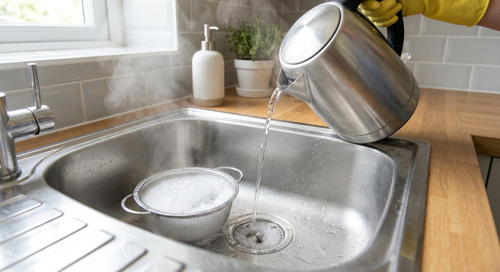
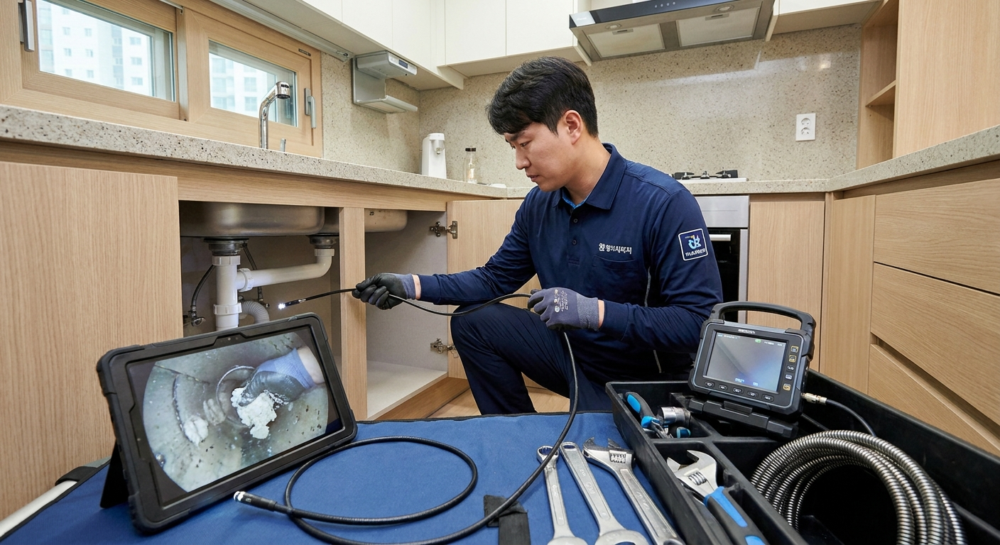

싱크대 배수구 막힘 뚫는 법과 역류 대처 — 셀프 해결 순서 vs 전문 배관 업체 출장 비용 비교
주방 싱크대 배수구 막힘은 음식물 찌꺼기보다 조리 중 흘려보낸 동물성 기름이 배관 벽에 달라붙어 하얗게 굳은 '유지방 슬러지(기름 덩어리)'가 주원인입니다.
단순한 배수 지연이라면 과탄산소다와 60도 온수를 활용한 화학적 용해나 압축기(석션기)를 활용한 셀프 DIY(비용 5천~1만 원)로 80% 이상 해결할 수 있습니다.
그러나 바닥 하수관에서 물이 차올라 하부장으로 넘치는 '바닥 역류' 현상이 발생했다면, 마루 썩음과 아랫집 천장 누수로 이어지기 전에 즉시 물 사용을 중단하고 전동 스프링이나 플렉스 샤프트 스케일링 전문 업체(출장비 10만~25만 원 선)를 불러야 합니다.

과탄산소다와 온수를 활용해 싱크대 주름관 내부 기름때를 안전하게 용해하는 셀프 청소 / AI 제작 이미지
01 | 싱크대 배수관이 막히는 근본 원인과 진행 3단계
주방 싱크대 배수관의 직경은 약 50mm(PVC 배관 기준)로 욕실 배관보다 좁은 편입니다. 여기에 매일 유입되는 고기 기름, 라면 국물, 식용유 등이 차가운 배관 벽에 닿으면 즉시 응고됩니다.
이 응고된 유지방에 밥알, 고춧가루, 미세 찌꺼기가 엉겨 붙으면서 동맥경화처럼 관로를 좁혀갑니다.
초기에는 물이 천천히 빠지는 배수 지연으로 시작되지만, 점차 꿀렁거리는 공기 방울 소리와 악취가 발생하고, 마지막 3단계에 이르면 바닥 하수관 연결부에서 물이 뿜어져 나오는 역류 사고로 발전합니다.
02 | 클릭 설계: 셀프 DIY vs 전문 설비 업체 비용 및 효과 비교표
배수관 막힘 정도에 따라 적용할 수 있는 해결 방법과 예상 지출 비용을 객관적으로 비교해 드립니다.
| 해결 방식 |
적용 도구 및 장비 |
소요 비용 (대략 범위) |
성공 확률 및 추천 상황 |
| 화학적 용해 (셀프) |
과탄산소다 + 주방세제 + 60도 온수 |
약 3,000 ~ 5,000원 |
초기 배수 지연, 단순 기름때, 일상적인 악취 제거 |
| 물리적 관통 (셀프) |
싱크대용 수동 와이어, 관통기, 뚫어뻥 |
약 7,000 ~ 15,000원 |
S트랩 및 주름관 내 이물질 걸림 |
| 주름관 교체 (셀프) |
배수구 통 + 홈통 주름관 세트 DIY |
약 20,000 ~ 35,000원 |
배수통 노후 악취, 주름관 내부 경화 및 변색 |
| 전문 업체 기본 관통 |
배관 내시경 카메라 + 석션 흡입기 |
약 100,000 ~ 150,000원 |
바닥 하수관 초입 막힘, 단단한 슬러지 흡입 |
| 전문 배관 스케일링 |
플렉스 샤프트 체인 회전기 + 세척 |
약 180,000 ~ 250,000원 |
배관 내경 100% 복원, 수년간 축적된 돌처럼 굳은 기름 |
| 고압 세척 (종결 공사) |
특수 고압 온수 분사 장비 (외부 맨홀까지) |
약 400,000 ~ 600,000원 |
빌라·단독주택 메인 횡주관 전체 막힘 |
03 | 셀프 해결 1단계: 과탄산소다와 온수로 기름 녹이기
가장 안전하면서도 효과적인 셀프 청소법은 산소계 표백제인 과탄산소다를 이용한 온수 스팀 요법입니다.
락스나 염산 계열의 강한 화학 약품은 PVC 플라스틱 주름관을 부식시키거나 유독 가스를 발생시킬 수 있으므로 주의해야 합니다.
🧪 과탄산소다 배수구 청소 정석 순서
1. 준비물: 과탄산소다 1~2컵(종이컵 기준), 주방세제 2~3펌프, 60~70도 따뜻한 물 3~4리터, 비닐봉지
2. 환기 및 보호: 주방 창문을 열고 고무장갑과 마스크 착용 (발열 및 거품 반응 대비)
3. 약품 투입: 배수구 거름망을 빼고 배수구 구멍에 과탄산소다를 붓고 주방세제를 두 펌프 두름
4. 온수 천천히 주입: (주의: 팔팔 끓는 100도 물은 PVC 주름관이 변형되므로 60~70도 온수 사용) 물을 종이컵 반 컵씩 천천히 부어 풍성한 거품 발생 유도
5. 밀폐 및 방치: 거품이 차오르면 비닐봉지나 배수구 뚜껑을 덮어 가스가 관로 아래로 밀려 내려가도록 20~30분간 방치
6. 대량 온수 세척: 남아있는 잔여물을 씻어내기 위해 따뜻한 물을 싱크대 볼에 가득 받아 한 번에 콸콸 쏟아부음
04 | 셀프 해결 2단계: 하부장 주름관 분해 및 슬러지 제거
과탄산소다로도 물이 빠지지 않는다면, 싱크대 하부장 안쪽에 연결된 주름 호스 내부가 꽉 막힌 상태입니다.
이 구간은 공구 없이 손으로 플라스틱 너트를 돌려 분해할 수 있으므로 초보자도 충분히 시도할 수 있습니다.
🔧 싱크대 하부장 주름관 자가 청소법
1. 받침대 준비: 하부장 바닥에 신문지와 걸레를 깔고, 호스에서 쏟아질 오수를 받을 넓은 대야를 받침
2. 너트 분해: 싱크볼 하단 배수통과 연결된 큰 플라스틱 캡을 반시계 방향으로 돌려 분리
3. 호스 탈거: 바닥 하수관에 꽂혀 있는 주름관 끝부분을 위로 조심스럽게 잡아당겨 탈거
4. 호스 내부 세척: 화장실로 호스를 가져가 긴 와이어 옷걸이나 솔로 굳어있는 기름 찌꺼기를 털어내고 온수로 헹굼
5. 주름관 경화 시 교체: 호스가 돌처럼 딱딱하게 굳어있다면 철물점이나 인터넷에서 1만 원 안팎의 새 주름관 세트로 교체 권장

전문 배관 설비 기사가 내시경 카메라를 투입해 바닥 하수관 슬러지 위치를 정밀 확인하는 과정 / AI 제작 이미지
05 | 셀프 중단! 즉시 전문 업체를 불러야 하는 위험 신호 3가지
모든 막힘을 셀프로 해결할 수 있는 것은 아닙니다. 아래 3가지 증상이 나타나면 무리한 자가 시도를 즉시 멈추고 전문가를 호출해야 합니다. 자칫 잘못하면 수백만 원대의 누수 피해 배상 책임을 질 수 있습니다.
🚨 즉시 업체를 불러야 하는 3대 위험 상황
1. 바닥 배관 역류 발생: 싱크대에서 물을 내렸을 때 물이 빠지지 않고 하부장 바닥 걸레받이 틈새로 물이 배어나오는 경우 (바닥 슬러지 완전 폐색)
2. 단단한 이물질 추락: 숟가락, 칼, 병뚜껑, 플라스틱 포크 등 딱딱한 물체가 배관 안으로 빠져 들어간 경우 (스프링 기계로 쑤시면 배관이 깨짐)
3. 아랫집 천장 습기 발생: 아랫집에서 주방 천장 벽지가 젖어든다고 연락이 온 경우 (단순 막힘이 아닌 하수관 파손 또는 이탈)
06 | 전문 배관 업체 시공 공법 3가지: 내시경·석션·샤프트
전문 업체를 부르면 기사가 어떤 장비를 쓰느냐에 따라 비용과 배관 청소 품질이 달라집니다. 바가지요금을 피하기 위해 주요 공법을 알아두는 것이 좋습니다.
과거에는 단순히 스프링 와이어를 밀어 넣어 기름 덩어리에 구멍 하나만 뚫고 가는 방식이 많았지만, 최근에는 내시경 카메라로 배관 속을 직접 보면서 작업하는 첨단 공법이 표준으로 자리 잡았습니다.
| 전문 장비 공법 |
작업 원리 및 세부 내용 |
장점 및 청소 완성도 |
| 석션 흡입 공법 |
초강력 진공 흡입기로 배관 속 오물과 기름을 바깥으로 빨아냄 |
슬러지를 하수관 아래로 밀어내지 않아 2차 막힘 위험 없음 |
| 플렉스 샤프트 스케일링 |
초고속 회전하는 특수 체인이 배관 내벽의 기름을 완벽히 갈아냄 |
내시경을 보며 진행, 신축 배관 수준의 100% 관경 복원 |
| 배관 고압 세척 |
200바 이상의 고압수를 360도 전방위 분사하여 배관을 세척 |
아파트 저층 횡주관이나 상가 배관의 근본적 기름 제거 |
07 | 클릭 설계: 출장 업체 부를 때 바가지요금 피하는 5대 체크리스트
설비 업체를 부를 때 "기본 출장비 5만 원"이라고 해놓고 현장에서 50만 원, 100만 원을 요구하는 악덕 업체들이 적지 않습니다. 사전 예방을 위한 체크리스트입니다.
🛡️ 배관 업체 예약 시 필수 확인 체크리스트
- [ ] 1. 유선 상담 시 상한선 확인: "추가 작업 발생 시 최대 비용이 얼마까지 나오는지" 견적 범위를 유선상으로 미리 확답받기
- [ ] 2. 내시경 검사비 포함 여부: 내시경 촬영 후 별도의 카메라 검사비(5만~10만 원)를 청구하는지 사전 문의
- [ ] 3. '못 뚫으면 0원' 조건 확인: 정상적인 업체는 해결하지 못했을 때 출장비 외에 과도한 비용을 요구하지 않음
- [ ] 4. A/S 보증 기간 확인: 작업 완료 후 동일 원인으로 재막힘 발생 시 무상 A/S(최소 1~3개월) 제공 여부 확인
- [ ] 5. 시공 전·후 내시경 화면 확인: 뚫기 전 꽉 막힌 화면과 뚫은 후 깨끗해진 배관 내벽 화면을 고객에게 직접 확인시켜 주는지 점검
08 | 다시 막히지 않는 평소 주방 배수구 관리 습관
비싼 돈을 들여 배관을 청소했더라도 식습관과 설거지 습관이 바뀌지 않으면 1~2년 내에 반드시 재발합니다.
첫째, 프라이팬의 기름때는 키친타월로 먼저 닦아내고 일반 쓰레기로 배출해야 합니다. 기름이 묻은 채로 뜨거운 물과 세제로 씻어내면 당장은 내려가지만 차가운 바닥 배관에 닿아 다시 굳어버립니다.
둘째, 설거지가 끝난 뒤 싱크대에 뜨거운 물(온수)을 10~15리터가량 가득 받아 한 번에 배수하는 습관을 들이세요. 강한 수압과 유속이 배관 바닥에 가라앉으려는 미세 기름 슬러지를 본관으로 시원하게 밀어내 줍니다.
09 | 싱크대 막힘 및 역류 관련 핵심 FAQ
Q1. 뚜러뻥 액체(트래펑 등)를 자주 부어도 배관에 이상이 없나요?
A1. 마트에서 파는 액체 배수구 세척제는 머리카락이나 미세 유기물을 녹이는 데 효과적이지만, 이미 돌처럼 굳은 두꺼운 유지방 덩어리는 녹이지 못합니다. 과도하게 부으면 하부 침전물과 엉켜 오히려 젤리처럼 굳어버릴 수 있으므로 주의해야 합니다.
Q2. 아파트 고층인데 우리 집 싱크대가 막히면 아랫집에도 영향이 가나요?
A2. 우리 집 전용 배관(가지관) 막힘은 우리 집 하부장에서만 역류합니다. 하지만 아파트 세대가 함께 쓰는 공용 수직 입상관이 막히면 1층이나 2층 등 최저층 세대의 싱크대로 위층의 모든 오수가 역류하는 대형 사고가 발생하므로 관리사무소에 즉시 알려야 합니다.
Q3. 싱크대 하부장에 물이 찼는데 아파트 화재보험이나 일배책으로 보상되나요?
A3. 아랫집 천장에 누수 피해를 주었다면 윗집의 일상생활배상책임보험으로 아랫집 수리비가 보상됩니다. 그러나 우리 집 싱크대 배관 자체 청소비나 우리 집 마루 피해는 특약(급배수시설누출손해 특약 등)이 별도로 가입되어 있어야만 보상받을 수 있습니다.
#싱크대막힘뚫는법
#싱크대배수구역류
#하부장물샘대처
#과탄산소다배수구청소
#배관스케일링비용
#플렉스샤프트청소
#싱크대주름관교체
#하수구뚫는비용
#주방기름슬러지제거
#집수리실무